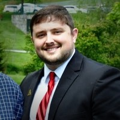

About Me

I graduated high school in 2006 with the idea that I would become a doctor in the coming years. I attended East Carolina University with a major in Health Education and Promotion, which was a pre-med track. After three years, I had come to realize that I did not enjoy chemistry/physics, and was wanted something different for my future, but I wasn't sure what exactly at the time. I made the hard decision to return home and work for a few years until I got the inspiration to pursue another career.
In 2013, I realized that I had a passion for computers and technology, and thought about a career in IT. I made the decision to return to college at Appalachian State, and selected a major of Computer Information Systems. Three years later, I had finished my program and graduated with honors, having accepted a position at Lowe's Corporate in Mooresville, NC prior to graduation. Next week marks my two-year anniversary at Lowe's and I can honestly say that time has flown by. Although I have been working in IT, most of my time has been spent in non-technical fields such as Release Management and Business Analysis. I have always had a deep interest in programming, but previously have not had the courage or determination to pursue that dream.
This year, I finally made the decision that I was tired of not doing what I wanted to do in life. I decided I was going to work on my mental and physical health, making that a priority, along with finally accomplishing my goal of becoming a developer. After lots of thought and decision-making, I decided that web development was what I was most interested in, and found the Coding Bootcamp at UNCC. Although the drive is kind of far, I am more than happy and motivated to succeed in this course and prove to myself that anything is possible.